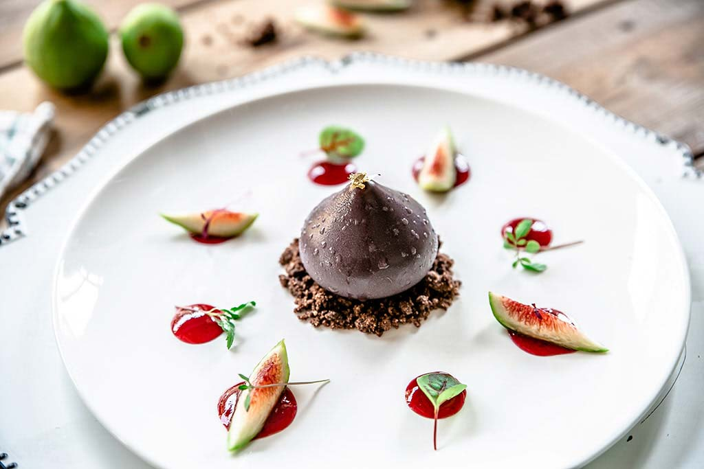

Lasciati conquistare dai nostri primi piatti, un viaggio tra sapori autentici e ingredienti freschi.
Dalla pasta fatta a mano ai risotti cremosi, ogni portata è preparata con cura per esaltare il gusto
della tradizione italiana. Che tu scelga un classico senza tempo o una proposta originale, troverai
il
primo piatto perfetto per soddisfare il tuo palato in questo LINK.
Preparati a scoprire il cuore della nostra cucina, dove tradizione e creatività si incontrano. I
nostri
secondi piatti sono pensati per celebrare i sapori autentici, con carni selezionate, pesce
freschissimo
e verdure di stagione. Ogni portata è realizzata con ingredienti di alta qualità e un'attenzione
speciale ai dettagli, per offrirti un’esperienza unica a ogni boccone in questo LINK.

Concludi il tuo pasto in bellezza con i nostri dessert, un trionfo di dolcezza e creatività. Dalle
ricette tradizionali ai dessert più innovativi, ogni proposta è pensata per regalarti un momento di
puro
piacere. Ingredienti freschi, aromi avvolgenti e un tocco di maestria rendono ogni dolce un piccolo
capolavoro. Che tu preferisca un classico intramontabile o un’esperienza sorprendente, qui troverai
il
finale perfetto per il tuo viaggio di gusto in questo LINK.